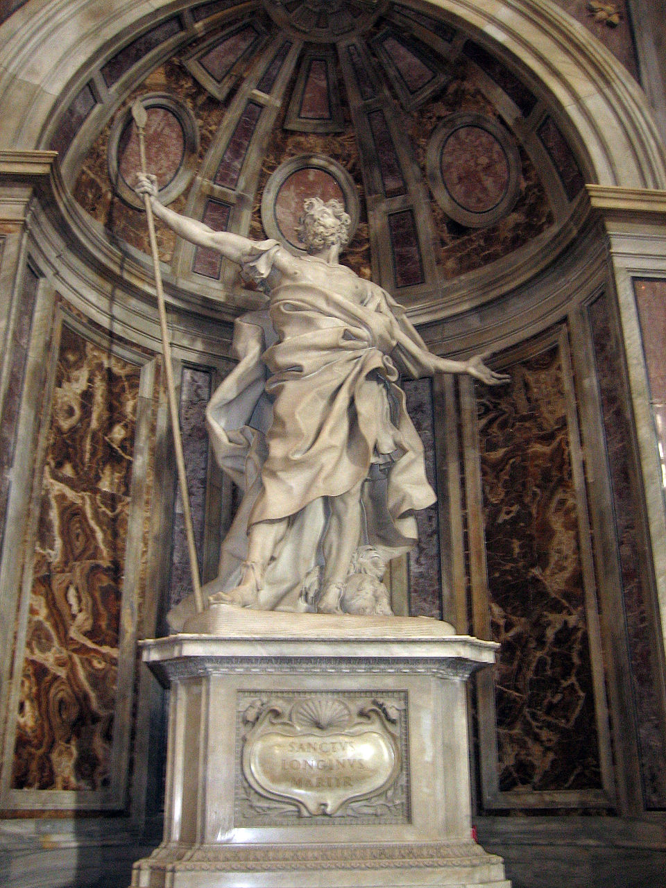

Poignant Artistic Depictions
How two thousand years of artists have interpreted the soldier and his lance.

Placeholder
Byzantine · c. 11th Century
Crucifixion Mosaic
Gold mosaic tradition fixed Longinus as the soldier to Christ's right, spear raised. His identity became iconographically standardised.

Placeholder
Grünewald · 1512–1516
Isenheim Altarpiece
Among the most viscerally agonizing Crucifixions ever painted. A soldier figure at right holds the lance; the suffering depicted made the wound a theological focal point.
Placeholder
Gian Lorenzo Bernini · 1635
Saint Longinus · St. Peter's
Bernini's colossal marble (4.4m) for the crossing of St. Peter's Basilica. Arms flung wide, gaze raised — the moment of conversion made permanent in stone.
Placeholder
Peter Paul Rubens · c. 1614
The Lance of Longinus
Rubens painted the scene multiple times, giving the soldier a look of dawning horror — as if only in the act did he understand what he had done. Blood flows from the wound in rivulets of crimson.
Explore the complete gallery of Longinus depictions — from Syriac illuminations to Baroque oil and modern film — in the Art & Depictions chapter.